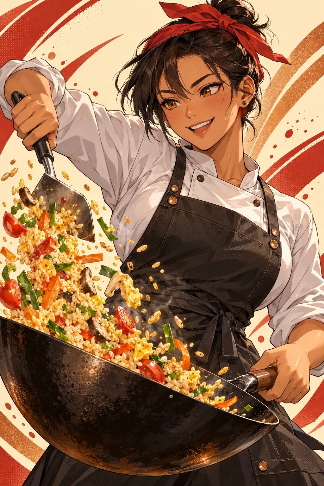

MIDNIGHT SERVICE · RHYTHM COOKING
SIZZLE
SYNC
맛의 완성은 타이밍입니다.
D F J K로 조리하고, SPACE로 서빙하세요.

THE MENU
오늘의 서비스
FIRST SERVICE첫 주문
점수000000
콤보×0
손님 기다림100
NEXT DISH준비 중재료 0 / 0
오늘의 접시0 / 14
KITCHEN PAUSED
잠깐, 불을 줄였어요.
박자와 홀드가 현재 위치에서 멈춥니다.
SERVICE COMPLETE
서비스 종료
ARANK
SCORE000000
ACCURACY0%
DISHES0 / 0
BEST COMBO×0
SERVICE NOTES
박자를 맛으로 바꾸는 법
조리
D F J K가 네 개의 조리대입니다. 노트가 금색 선에 닿는 순간 누르면 재료가 익습니다.
서빙
SPACE는 넓은 금색 서빙 큐입니다. 접시의 마지막 박자에 맞추면 손님이 웃습니다.
홀드
길게 이어진 노트는 끝까지 누르세요. 너무 일찍 놓으면 재료가 탑니다.
판정
PERFECT · GOOD · OK가 점수와 콤보를 만듭니다. 실수는 기다림을 줄입니다.